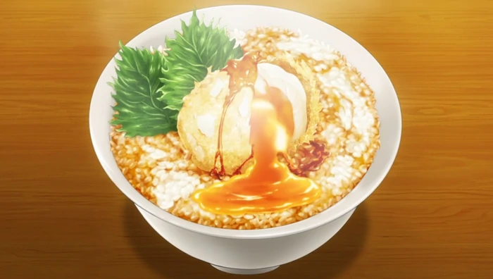

Egg Tempura Don

Description
A magically tempura-fried runny egg tops this epic bowl of rice.
Ingredients
- Eggs
- Potato Starch
- Flour
- Rice
- Bonito Broth
- Soy Sauce
- Mirin
- Sugar
- Shiso Leaves
Method
- Freeze the eggs completely then peel.
- Mix together the flour, starch, and some water to make a light batter.
- Dust the peeled eggs in flour then coat in the batter. Deep fry eggs, repeat this step for shiso leaves.
- Heat broth, soy sauce, mirin, and sugar in a pot and bring to the boil. Simmer for a few minutes to reduce.
- Pour a little sauce over the rice then top with the finished eggs and shiso leaves. Pour remaining sauce over the top.